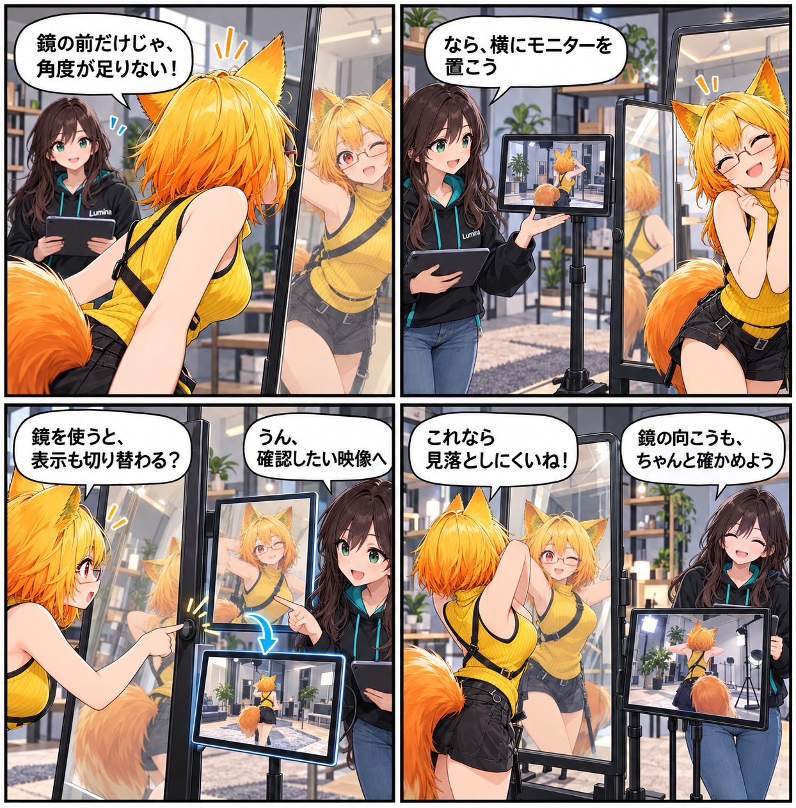

鏡の向こうを、モニターで確かめる日
VR空間の鏡に、立体的なモニター表示を組み合わせました。鏡を使う操作でモニターカメラの表示を切り替え、デスクトップとVRの両方で確認しやすくする改善です。

鏡のそばに、もう一つの見え方を置く
鏡そのものを映すだけではなく、スタジオ用のカメラ映像を表示できるモニターを追加しました。新しいモデルを用意し、VRの鏡として使える形へ組み込んでいます。鏡の近くで、別の角度やカメラの状態を確かめるための足場を増やす狙いです。
使う操作で、表示も切り替える
鏡をUSEしたときにモニターカメラ表示を切り替える経路を加え、デスクトップでの操作と表示も整えました。鏡の出力要求と表示状態を分け、触っているときの状態も扱えるようにしています。単に置いてある小物ではなく、確認に使えるスタジオ機材として動くことを目指した変更です。
既存の互換操作ともつなぐ
VCIのカメラ・鏡に関わる互換操作も追加し、システム側のカメラや鏡を参照・操作できる入口を広げました。位置、回転、サイズなどを扱う際は、存在しない対象へ無理に適用せず、現在のインスタンスを確認してから処理します。
ほかにも進んだこと
この期間には、デスクトップ向けライト編集UIの整理、PotaToonの見た目と照明・Deferred Renderer表示の調整、可視アバター品質とPhysBone Jobs最適化、環境プリセット適用時の時刻同期修正も入りました。
4コマの裏話
今回は、鏡の前で「一つの見え方だけでは足りない」と気づき、モニターを足して別角度も確かめられるようになる話です。実際の実装どおり、画面上のUIではなく、スタジオ内に置かれた機材として描きました。
まとめ
鏡を起点に、立体モニター、カメラ出力の切替、デスクトップ・VR双方の操作をつなげました。鏡の前だけでなく、スタジオ内の確認方法そのものを少しずつ増やしています。
本日のひとこと
映るだけの鏡から、確かめるための相棒へ。